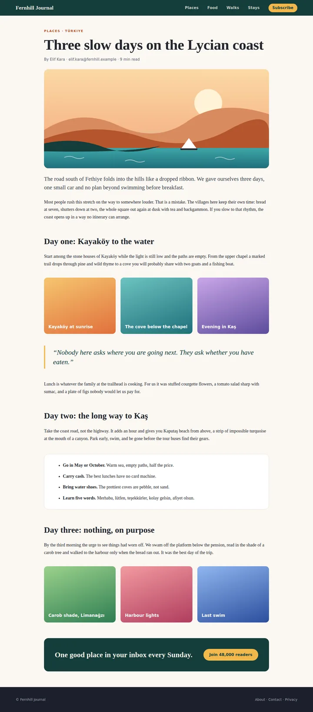
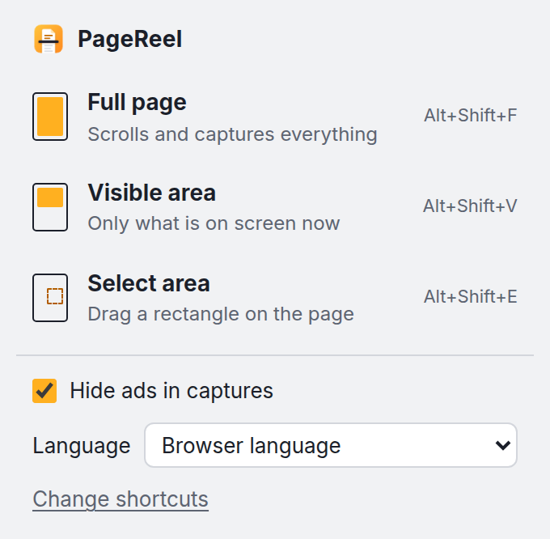
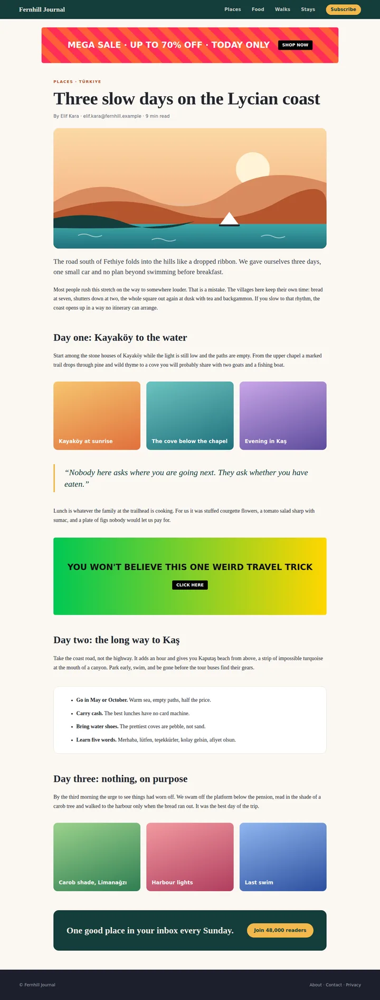
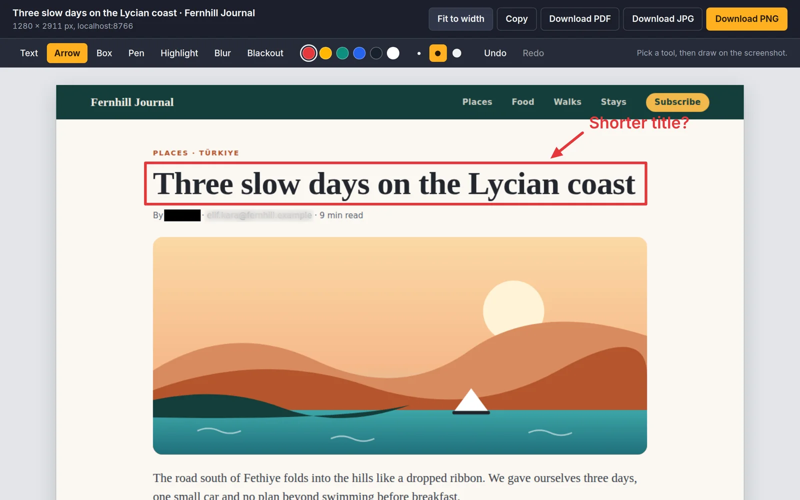

The whole page, in one click.
PageReel scrolls a web page for you and stitches it into one image. Hide the ads, mark it up, and save it as PNG, JPG or PDF.
No account. Captures never leave your browser.

Three ways to capture
Full page
Scrolls for you and stitches every screen into one image. Sticky headers appear once.
Alt+Shift+FVisible area
Exactly what is on screen right now, nothing more.
Alt+Shift+VSelect area
Drag a rectangle around the part you need.
Alt+Shift+EAds out, page intact
Common ad slots are removed before a full-page capture, and the page closes up around them.
It is one switch in the menu. Detection relies on standard ad markup, so an unusual ad may still get through.

Mark it up before you share
Point at what matters and hide what is private. Everything you add is included in the file you download.
- Text
- Arrow
- Box
- Pen
- Highlight
- Blur
- Blackout

Small things that matter
Save it your way
PNG, JPG, a paged PDF, or straight to the clipboard.
Private by design
No account and no uploads. Captures stay in your browser and are deleted after one day. Read the privacy policy.
55 languages
PageReel follows your browser's language, or you can pick one in the menu.
Capture your first page
Free on the Chrome Web Store. Questions? See Support.